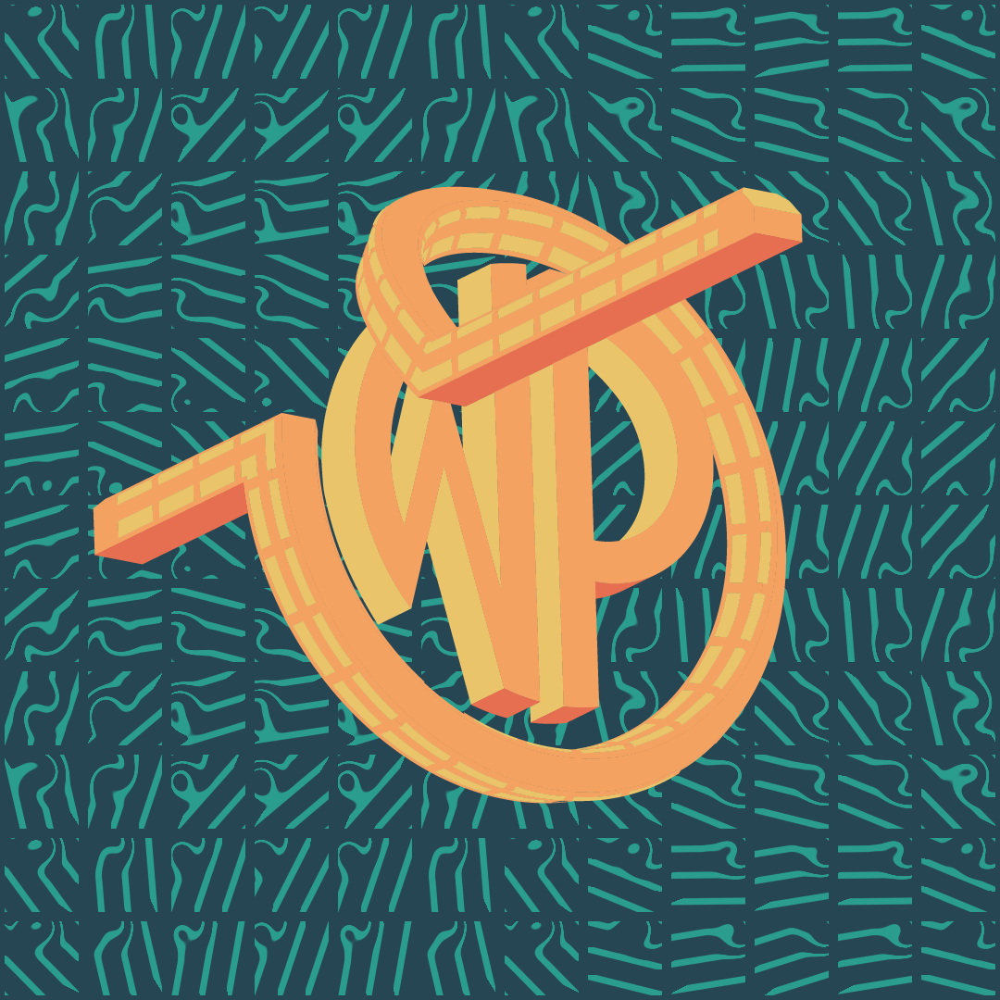
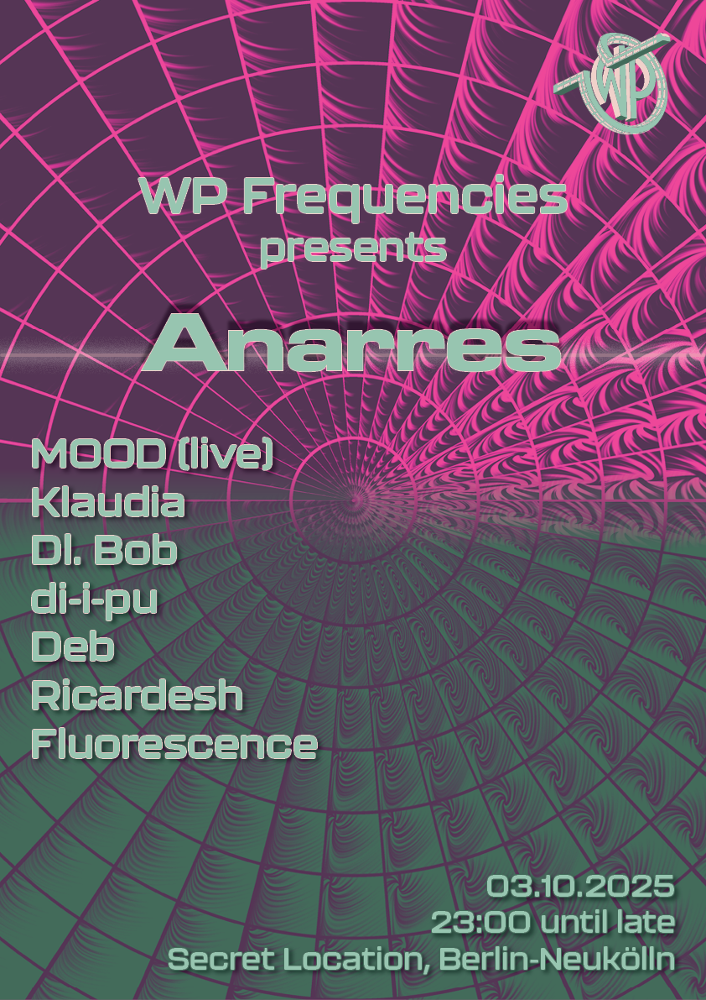
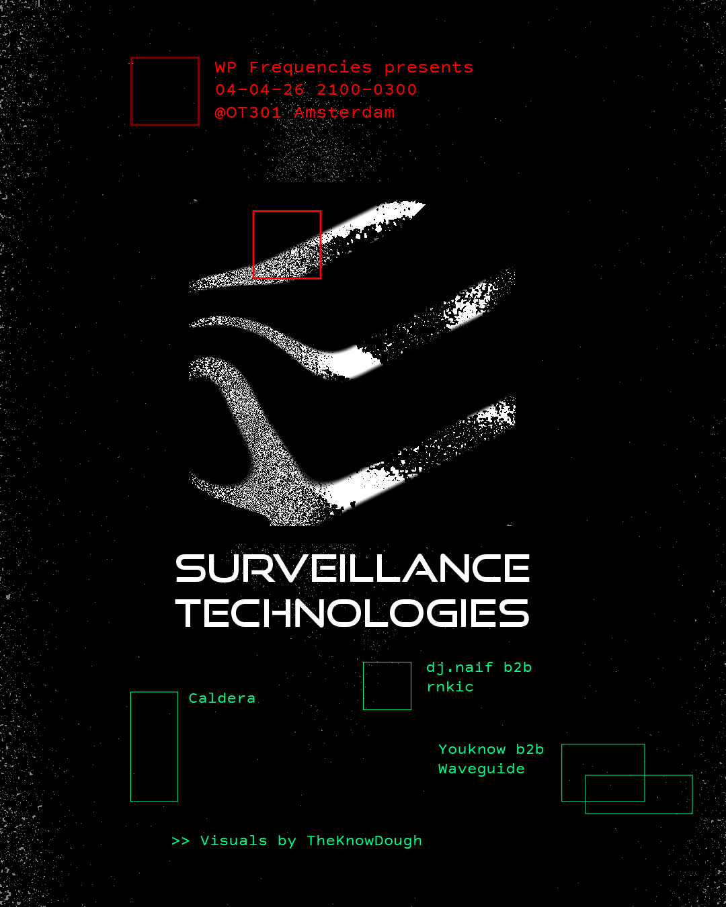

Collective
2023-present, Amsterdam


I co-founded the collective WP Frequencies in Amstedam together with Sandra Lentini and Corentin Racine with the aim to consolidate the ever-growing creative spirit and music passion within our friends’ circle into an entity that would enable us to organise music events, expose new talents and express ourselves through various forms of art. Joined by DJs with expanding skills in event organisation and collective work: dj.naif (Guillaume Sautierre), Youknow (Charlotte Tusset) and NosyOwl (Arno Polegato); WP Frequencies is establishing itself internationally through diversely curated parties, free from genre dogma and attracting distinguished and upcoming DJs alike.


Beside event organisation and DJing under the alias fin, my primary involvement is in the branding and graphic disign for the collective, for which I often utilise generative graphics. I also contribute as a VJ to many of the parties, employing live-coded visuals or interactive video installations with playful physical interfaces.
More info here.